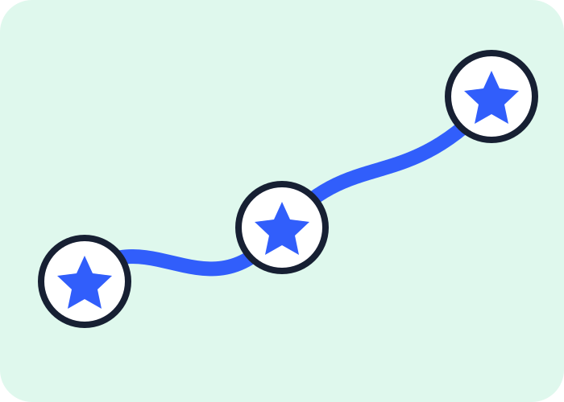

Achievements
Signals tied to qualifying activity such as merged work, accepted answers, or collaboration.
Learn the basics →ACHIEVEMENTS WITHOUT THE NOISE
Understand achievements, highlights, README shields, and safe practice workflows without spamming projects or chasing stale requirements.

THE BASICS
Filter the guide by the kind of signal you want to understand.
Signals tied to qualifying activity such as merged work, accepted answers, or collaboration.
Learn the basics →Program or account signals that may depend on eligibility, applications, or paid plans.
See the context →Project status indicators for builds, coverage, releases, documentation, or licensing.
Build better badges →A BETTER CHECKLIST
Tick off a low-pressure path in this browser and your progress stays on this device.
Start with the README, contribution guide, and code of conduct.
Keep experiments in your own space instead of creating noise for maintainers.
Let the quality of the contribution matter more than the badge.
Read the revised guide for responsible workflows, current-aware caveats, and links to official references.
Open the full guide ↗